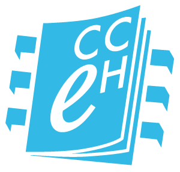
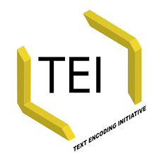

Workshop
Edición digital y análisis cuantitativo de textos poéticos del Siglo de Oro
Antonio Rojas Castro
Università di Verona
29-30 de noviembre y 6-7 de diciembre de 2017

Sesiones
- 29/11/2017: Introducción a la edición digital de textos poéticos
- 30/11/2017: Ejercicios prácticos de codificación TEI
- 06/12/2017: Ejercicios prácticos de transformación XSLT
- 07/12/2017: Introducción a Stylo (clasificación y palabras distintivas)
Objetivos generales
- 1. Codificar con TEI textos poéticos del Siglo de Oro español en doble presentación, con notas y aparato de variantes.
- 2. Realizar transformaciones sencillas de documentos XML/TEI en formato HTML con hojas de estilo XSLT.
- 3. Utilizar las principales funcionalidades de la herramienta Stylo con el objetivo de analizar textos literarios.
Sesión 1
¿Qué vamos a aprender hoy?
- 1. Introducción a la edición académica digital
- 2. El lenguaje de marcado XML
- 3. La codificación TEI
- 4. Funcionamiento del editor Oxygen
1. Introducción a la edición académica digital
2. El lenguaje de marcado XML
¿Por qué utilizamos lenguaje de marcado?
- Porque nos ayuda a explicitar las propiedades de los textos y comunicarlas a nosotros mismos, a otras personas y a los ordenadores.
- Porque nos permite enriquecer los textos añadiendo anotaciones múltiples, de tal modo que a partir de un solo archivo se pueden generar distintos documentos.
- Porque favorece la reutilización de la información y permite transformar el documento en otros formatos y contextos y para otros destinatarios.
¿Qué lenguajes de marcado conoces?
¿Algunos nombres?
Dos tipos de lenguaje de marcado
- Presentacional: visualiza el aspecto de un texto -->
Edición digital y análisis cuantitativo... - Descriptivo: representa el contenido de un texto -->
Edición digital y análisis cuantitativo...
El lenguaje de marcado descriptivo
- Separa el contenido de un texto de su aspecto a fin de facilitar la reutilización de la información.
- Permite realizar cambios sobre el aspecto en una colección de textos.
No hay modelado neutral
- Etiquetar un texto con lenguaje de marcado es un acto interpretativo.
- El proceso se conoce como modelado y conlleva una serie de acciones como análisis, selección y representación.
- Todos somos hijos de nuestra época, cargamos con una experiencia editorial concreta, disponemos de recursos limitados y tenemos intereses muy específicos.
No hay modelado neutral
- ¿Qué propiedades textuales te interesan?
- ¿Qué relaciones puedes establecer entre dichas propiedades textuales?
- ¿Cuáles son sus atributos?
- Y sobre todo: ¿cómo quieres procesar la información?

¿Preguntas? ¿Dudas?
Hello, XML!
- XML es un lenguaje de marcado descriptivo que sirve para estructurar datos en forma de documento.
- Se distingue de HTML en tres aspectos:
- XML es extensible
- XML debe estar bien formado
- XML puede validarse con un esquema
- XML requiere el uso de textos en Unicode (ISO 10646).
¿Qué aspecto tiene un documento XML?
Sintaxis del XML
- Un documento XML debe contener al menos un elemento.
- Elemento XML = etiqueta de inicio + contenido (opcional) + etiqueta de cierre
- El contenido del elemento puede ser una cadena de caracteres Unicode o bien otros elementos.
- Un elemento puede contener uno o más atributos; los atributos consisten en un nombre y un valor determinado.
- Un documento XML también puede contener instrucciones de procesamiento, comentarios y referencias a entidades (entity references).
Un documento XML está bien formado cuando...
- solo hay un único elemento raíz;
- todos elementos se anidan unos en otros formando una estructura arbórea contenida en el elemento raíz;
- todos nombres de los elementos y atributos están escritos correctamente;
- todos los elementos contienen una etiqueta de apertura y de cierre;
- los valores de los atributos están entrecomillados.
La declaración XML
Se sitúa al inicio del documento y sirve para...
- especificar que se trata de un documento XML;
- especificar la versión XML utilizada;
- especificar qué codificación de caracteres se está empleando.
La declaración XML
Algunas particularidades...
- Algunos caracteres especiales como corchete angular y ampersand no pueden representarse como tal sino utilizando entidades.
- Las entidades se delimitan con ampersand y ;
- Podemos añadir comentarios, pero para que no se interpreten como XML deben estar delimitados por
¿Preguntas? ¿Dudas?
3. La codificación TEI
¿Qué es?
- La Text Encoding Initiative (TEI) es un modelo abstracto con el que representara textos académicos en format digital cuyos orígenes se remontan a 1994.
- Las Guidelines de la TEI es una publicación que consta de 23 capíulos; cada capítulo cubre un módulo, es decir, un grupo de elementos y atributos.
Componentes principales de un documento TEI
- Un documento TEI contiene un elemento TEI con datos y metadatos.
- Los metadatos se hallan en el elemento teiHeader.
- Los datos (en nuestro caso el texto poético) se hallan en el elemento text.
Estructura básica de un documento TEI
Título de la edición
Información sobre la publicación
Información sobre la fuente de la que deriva el texto.
El poema va aquí
Componentes principales del teiHeader
- fileDesc:
- titleStmt
- editionStmt
- publicationStmt
- sourceDesc
- profileDesc:
- particDesc
- settingDesc
Estructura básica del teiHeader
Información sobre el título, el autor y el editor de la edición digital
Información sobre la edición digital
Información sobre quién es responsable de la publicación
Información sobre las fuentes de las qu deriva el texto
Información sobre las personas implicadas o bien mencionadas en la edición.
Información sobre los lugares implicados o bien mencionados en la edición.
Componentes principales de text
- El texto se puede dividir en tres partes:
- front (preliminares)
- body (cuerpo de texto)
- back (apéndices)
- Cada una de estas tres partes se pueden dividir en elementos div, por ejemplo, para contener capítulos, partes o secciones.
Componentes principales de text
Componentes principales de div
- Por hacer
- Por hacer